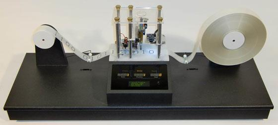

5.1.Definição
É um dispositivo imaginário que formou a estrutura para fundamentar a ciência da computação moderna.
Seu inventor, o matemático Alan Mathison Turing, mostrou que a computação das operações de leitura, escrita e exclusão de símbolos binários poderiam ser satisfeitas por uma máquina que continha uma fita de comprimento ilimitado, com quadrados de tamanho definido sobre ela e um dispositivo com um número finito de estados, que realizava as operações na fita.
Em 1936 foi formalizado o termo algoritmo: um conjunto finito de instruções simples e precisas, que são descritas com um número finito de símbolos. “Qualquer processo aceito por nós homens como um algoritmo é precisamente o que uma máquina de Turing pode fazer” (Alonzo Church, matemático).
